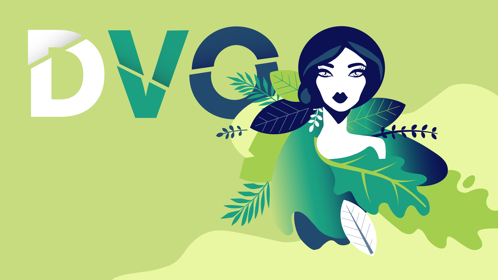
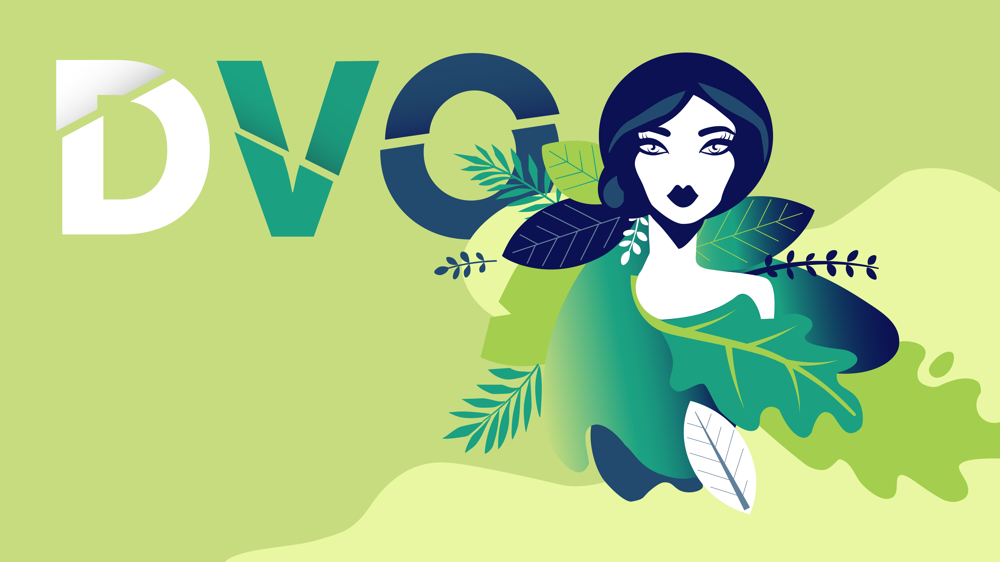

Diverse vaardigheden
Ik ben in staat om projecten op het gebied van UI/UX-design, illustratie en front-end uit te voeren, met een solide kennisbasis. Hoewel mijn voorkeur uitgaat naar UX-design, heb ik onlangs een sterke interesse ontwikkeld in het coderen en vind ik het leuk om mijn vaardigheden op dat gebied verder te ontwikkelen.
UX/UI Design
Illustratie

Front-End Web Development


.png)
Recente Ervaring
In mijn recente ervaring heb ik meegewerkt aan een opwindend project voor de ontwikkeling van een open-source slimme laadpaal. Ik was bij de branding, website-ontwikkeling en productdesign betrokken, allemaal binnen een teamomgeving. Mijn rol omvatte het creëren van consistente visuele identiteiten, het ontwerpen van intuïtieve gebruikersinterfaces en het samenwerken met het team om effectieve ontwerpoplossingen te leveren. Ik ben trots op mijn vermogen om samen te werken en bij te dragen aan succesvol project die zowel functioneel als esthetisch aantrekkelijk is
Showcase
Ik zou graag een deel van mijn werk willen delen op het gebied van frontend design en UX/UI. Ik ben enthousiast om jullie een inkijkje te geven in mijn creatieve portfolio en de resultaten te tonen van mijn inspanningen op het gebied van design en gebruikerservaring. Ik geloof dat deze voorbeelden jullie zullen laten zien hoe ik innovatieve en effectieve ontwerpoplossingen kan creëren.
 
